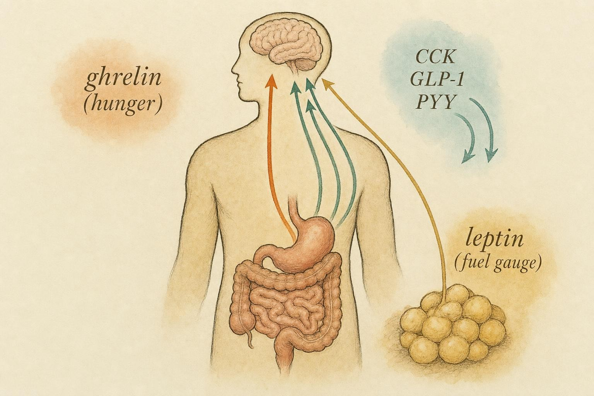

The Hunger You Have to Outlast
Appetite, satiety, and why adherence is a physiological outcome, not a character trait.
Picture two identical food logs. Same calories, same macros, same training days checked off in the same neat handwriting. One person is coasting through week ten of a deficit, energy steady, asking whether the pace could be pushed a little harder. The other is starting to quietly under report, an extra handful of nuts here, a second helping there, entries that used to be logged honestly and now simply are not. On paper the two plans are the same diet. In the body running each one, they are not remotely the same experience. The gap between them is not discipline. It is physiology, and by the end of this chapter you will be able to say exactly why.
Every mechanism this course has examined so far describes a way to nudge the fat cell from the outside: hormones, tissue, exercise, compounds. This chapter is the honest counterweight. The brain defends its energy stores relentlessly, and the leaner a body gets, the harder that defense pushes back. Adherence, the simple act of continuing to do the plan, is where all of that pushback finally comes to collect.
One person's situation threads through this whole chapter so the physiology stays attached to a real shape rather than an abstraction. Call her Yara, twenty seven years old, an amateur powerlifter working toward her first physique event. She started her preparation at nineteen percent body fat and, twenty weeks in, sits close to twelve percent. Her training has not changed. Her coaching, if she has any, has not changed. What has changed is how loudly her own body argues with her by four o'clock every afternoon. Yara is not a real person being diagnosed here, and nothing about her situation is a template to apply blindly to anyone else. She is a composite case built to keep the physiology honest, the same way a worked example keeps a math lesson honest, and she will return at several points in this chapter to show how the same principle looks at different stages of a cut.
Start Here: What This Chapter Reframes
Before the biology, the decisions it should change. If only four sentences from this chapter stick, make them these.
One. When adherence erodes, whether in someone you are guiding, someone close to you, or your own experience of a diet, the first hypothesis should not be weak motivation. It should be a defended setpoint escalating its drive to eat. Treat a slip as a signal about the plan, not a verdict on the person living inside it.
Two. Hunger gets worse as a body gets leaner, and it does not fully reset the moment a diet ends. This changes how aggressive a deficit can reasonably be, and for how long. A person with more fat mass to lose is fighting a quieter defense than someone chasing the last few points of body fat.
Three. There is a small set of legitimate levers that measurably ease the pushback: protein, fiber, sleep, meal structure, and planned diet breaks. None of them switch hunger off. All of them buy adherence at the margin, and margins are what decide whether a cut gets finished.
Four. Persistent hunger dysregulation, distress around food, or eating patterns that feel out of control are not adherence problems to work around with a cleverer meal plan. They are signs that warrant professional evaluation. Knowing that boundary, and knowing it before it is needed, is part of handling this material responsibly.
The Signals: A Fast Refresh on How Hunger and Fullness Are Governed
These hormones have appeared in passing already in this course. Here they become fluent, because every lever discussed later in the chapter acts directly on this machinery. Appetite is not a single switch flipped on or off. It is a running negotiation between signals that report on the current meal and a signal that reports on long term energy stores.
The short term meal signals
Ghrelin is the one people remember, because it is the only major gut hormone that reliably makes a person hungrier rather than fuller. It rises before meals and falls after them, and in healthy people ghrelin levels track hunger scores closely enough that the hormone can help initiate a meal even when the body has no immediate caloric need (Klok et al., 2007). Think of ghrelin as the pre meal drumbeat. When it climbs, the drive to eat climbs with it.
Working against ghrelin is a family of satiety signals released as food arrives and moves through the gut. Cholecystokinin (CCK) responds to fat and protein reaching the small intestine. Glucagon-like peptide 1 (GLP-1) and peptide YY (PYY) are released from the lower gut and slow gastric emptying while signaling fullness directly to the brain. Amylin, co-secreted with insulin, adds a further layer to the fullness signal. GLP-1 in particular deserves a flag here, because several of the compounds discussed in Chapter 6 act partly by amplifying this exact pathway. That overlap is not a coincidence. Some of the most powerful appetite pharmacology available today works by turning up the volume on satiety hormones the body already makes on its own.
The long term store signal
Leptin is the hormone that reports on fat mass itself. Fat cells secrete leptin roughly in proportion to how much fat they are holding, so leptin functions as the brain's fuel gauge for long term energy reserves. High leptin says, in effect, stores are full, spending is safe. Falling leptin says stores are dropping, defend them. Leptin suppresses food intake and permits energy expenditure when it is high, and it does the opposite as it falls (Klok et al., 2007). The detail that matters most for anyone dieting is that leptin does not fall in lockstep with body fat. It tends to fall faster and further than fat mass alone would predict during a deficit, which is why even a fairly modest drop in stored fat can produce a hunger response that feels wildly out of proportion.
None of these signals operate in isolation from the parts of the brain that handle reward, memory, and planning. Homeostatic hunger, the kind driven by ghrelin, leptin, and the gut peptides, is only one input into the decision to eat. A second system, built around dopamine and the brain's reward circuitry, can override a technically satisfied stomach when food is highly palatable, when stress is high, or when the prefrontal cortex, the brain region most responsible for weighing consequences and holding a plan in mind, is itself running on too little sleep. This is why a person can report feeling full on a meter and still eat past that point. The homeostatic system sets the baseline pressure to eat. The reward system decides, in the moment, how hard that pressure is to resist. Both systems matter for adherence, and the levers later in this chapter influence both, not just the hormone panel.

The negotiation: short-term meal signals and the long-term store signal, all reporting to the brain." data-image-idx="0" style="display:block;max-width:100%;max-height:75vh;height:auto;width:auto;margin:0 auto;cursor:pointer;">Here is the frame that matters most in practice. Short term signals decide the size and spacing of individual meals. The long term leptin signal sets the overall gain on the entire system. When leptin is high, a given meal satisfies. When leptin is low, that same meal satisfies less, and hunger returns faster afterward. Dieting lowers leptin. That single fact explains most of what a person feels in the back half of a cut, regardless of how carefully the meals themselves are constructed.
It is also worth naming, before moving on, that people do not all start from the same gain setting on this system. Body composition, prior dieting history, sleep quality, stress load, and simple individual variation in receptor sensitivity all shift how loudly a given leptin level gets amplified into felt hunger. Two people at the same body fat percentage, eating the same deficit, can report noticeably different hunger intensity, and neither one is imagining it or failing at it. This is one more reason a single template rarely fits everyone equally well, a theme that runs through the rest of this chapter and connects directly to the population fit principle introduced earlier in this course.
Setpoint Defense: Why It Gets Harder Precisely as It Works
The central nervous system behaves as if it holds an ideal amount of stored energy in mind, and it mounts a coordinated defense whenever reserves fall below that level. This is the single most important idea in the chapter. Rosenbaum and Leibel (2010) reviewed the full picture, and the number they report is sobering: more than eighty percent of people who successfully lose weight eventually return to their prior body fatness, and this is not primarily a failure of effort. According to Rosenbaum and Leibel (2010), it is the result of a coordinated metabolic, behavioral, neuroendocrine, and autonomic response designed to defend a brain-defined energy store, and much of that opposition is mediated by leptin. The response shows up in both lean people and people who were previously overweight who are trying to hold a reduced weight, which means it is ordinary human physiology rather than a quirk of any one body type.
Notice the defense has two arms. Chapter 1 covered one of them already: adaptive thermogenesis, the reduction in energy expenditure beyond what a smaller body alone would predict. That is the output side, the body spending less. This chapter covers the input side, the body wanting more. These are the same defense pointed in opposite directions, and they compound. Expenditure drops while appetite rises, and the widening gap between them is exactly the deficit that has to be bridged with behavior, meal by meal, for as long as the diet continues. According to MacLean and colleagues (2011), this dual response, comprehensive, persistent, and redundant across multiple physiological systems at once, is precisely why weight regain has proven to be one of the most stubborn problems in obesity treatment, and why strategies aimed only at the intake side of the ledger tend to underperform.
The defense is also asymmetric, and understanding why makes the whole system feel less arbitrary. A body that gains fat mounts only a mild opposing response, some rise in expenditure, some drop in appetite, nothing close to the intensity seen during a deficit. A body that loses fat mounts a large, coordinated, multi-system response aimed at getting the fat back. From a purely mechanical standpoint that asymmetry looks unfair. From an evolutionary standpoint it makes sense. For nearly all of human history, running out of stored energy was a far more urgent threat to survival than carrying a bit of extra fat ever was. A regulatory system shaped by that history would be expected to treat energy loss as the emergency and energy surplus as a comparatively minor event, which is exactly the pattern seen in the research. The setpoint is not defending an arbitrary number. It is running a very old threat model against a very modern situation, and the mismatch between that threat model and a deliberate, voluntary deficit is a large part of why advanced fat loss feels the way it does.
The defense does not switch off when the diet ends
The most important single study for understanding this comes from Sumithran and colleagues (2011). Fifty people with overweight or obesity went through a ten week very low energy diet, and the researchers measured a full panel of appetite hormones at the start, at ten weeks, and again a full year later. Immediately after the weight loss the picture was exactly what would be predicted: ghrelin up, satiety hormones down, subjective hunger elevated. The finding that changed the field was what showed up a full year afterward. According to Sumithran and colleagues (2011), the appetite hormone changes that push toward regain had not reverted to pre-diet levels. Ghrelin was still elevated. Leptin, peptide YY, and cholecystokinin were still suppressed. Subjective hunger was still higher than it had been at baseline, a full year after the acute diet had ended.
Sit with that finding for a moment. A year after the weight came off, and long after the structured diet itself was over, the brain was still running its defense program. This is why the honest counterweight to every fat loss mechanism in this course is not that fat is hard to lose. It is that the brain keeps defending its stores long after they are taken, sometimes for the better part of a year or more. A person is not imagining that maintenance feels like a low grade diet. Physiologically, for a while, it often is one.
Why a leaner body fights a harder war
Now the question from the opening of the chapter has an answer. Two people can lose the same absolute amount of fat mass, yet the leaner one suffers more, because leptin is proportional to stores rather than to pounds lost. A person starting at thirty percent body fat carries a large leptin reserve. Losing ten pounds of fat drops leptin, but plenty remains, and the defense stays relatively mild. A person starting at twelve percent body fat has very little leptin to begin with. The same ten pounds represents a far larger fractional drop in stores, leptin falls toward the floor, and the defense goes to full volume. Felt hunger is not tracking pounds lost. It is tracking how close the body has come to what it perceives as dangerous depletion.
This is why matching a plan to the person, rather than to a generic template, is not a nicety. It is the whole game. The same aggressive deficit that a person carrying substantial fat mass can run for months without much distress will make a lean physique competitor miserable and non-adherent within weeks. Yara's own numbers make the point cleanly. At nineteen percent, ten weeks in, her hunger was present but manageable, background noise rather than a constant argument. Near twelve percent, the argument is loud enough that she has started keeping some of it to herself. Nothing about her effort changed between those two points. Her leptin reserve did.
History with dieting itself can also shape how loudly a given body defends its stores, independent of current body fat percentage. Someone on their first structured deficit and someone who has been through several rounds of aggressive loss and regain, sometimes called weight cycling, do not necessarily start from the same baseline sensitivity, even at similar leanness. This is not a reason to treat every repeat dieter as fragile, and it is not a license to assume the opposite either. It is simply another argument for reading the person in front of the plan rather than assuming that a percentage on a body composition scan tells the whole story by itself.
Adherence Is Physiology, Not Willpower
Put the pieces together and a reframe becomes unavoidable. When someone stops adhering to a plan, the common explanation is that their motivation simply ran out. The physiological explanation is that appetite signaling was driven so hard by the defense that behavior finally bent under the pressure. These are not the same claim, and they lead to opposite responses.
The willpower explanation suggests adding accountability, tightening the plan further, and leaning harder on discipline. If the real driver is a leptin-driven surge in hunger, every one of those moves makes things worse. It amounts to asking a person to out-argue their own brainstem, and the brainstem does not lose that argument for long. The physiological explanation offers something more useful: adherence is an output that can be engineered. If hunger is the input driving non-adherence, the task is to lower hunger through legitimate means, not to demand more resistance to it.
None of this is permission to excuse everything. People still make choices, and structure still matters. The point is diagnostic. Before concluding that someone lacks discipline, it is worth ruling out the far more common explanation that the plan has simply outrun what current physiology can sustain. In practice, the physiological explanation is right more often than not, especially the leaner and longer a person has been dieting.
The recidivism to pre-weight-loss body fatness is not evidence of failed willpower but of a coordinated set of responses defending a central-nervous-system-defined ideal of energy stores.
paraphrasing Rosenbaum and Leibel, 2010
There is a communication payoff here too. Framing hunger as information rather than weakness changes a person's whole relationship with the process. Hunger stops being a moral test that keeps getting failed and becomes a readout of how hard the defense is currently pushing. Someone who understands that tends to stop white-knuckling and start problem-solving instead. That reframe alone often rescues adherence, because shame is one of the fastest routes to abandoning a plan altogether.
There is also a behavioral cost to chronic hunger that goes beyond the moment of eating itself. Sustained hunger narrows attention toward food related decisions and shortens the mental runway available for weighing consequences, an effect closely tied to the same prefrontal circuitry mentioned earlier in this chapter. Under that kind of pressure, an all-or-nothing pattern becomes more likely: rigid restriction that holds until a single lapse triggers a much larger departure from the plan, rather than a small, easily absorbed adjustment. This is one reason white-knuckling tends to fail in a specific, recognizable shape, long stretches of tight control followed by an overcorrection, rather than a slow, even drift. Recognizing that shape early is more useful than waiting for it to fully play out before responding.
The Honest Levers: What Actually Eases the Pushback
Now the useful part. Setpoint defense cannot be switched off, and anyone claiming otherwise is selling something. What can be done is making the deficit more livable at the margins. Every lever below is real, evidence based, and modest. Graded honestly, each one improves adherence by a few percentage points, and stacked together over months that is often the difference between finishing a cut and abandoning it partway through.
Lever one: protein
Protein is the most reliable satiety lever available. According to Weigle and colleagues (2005), raising protein from fifteen percent to thirty percent of energy at a constant carbohydrate intake produced markedly increased satiety, a spontaneous drop in energy intake of roughly four hundred forty calories per day, and meaningful loss of both body weight and fat mass, even though the change occurred alongside a decreased leptin exposure and an increased ghrelin exposure. In other words, protein did not win by pushing leptin and ghrelin in the favorable direction. It won largely despite those hormones moving the wrong way, which says something about how strong the satiating effect of protein itself really is.
The mechanistic backing is deep. According to Kohanmoo and colleagues (2020), a meta-analysis pooling sixty-eight trials, protein consumption significantly reduced hunger, desire to eat, and prospective food intake while increasing fullness and satiety. On the hormonal side, it lowered ghrelin and raised cholecystokinin and glucagon-like peptide 1. There is a practical wrinkle worth knowing: subjective appetite responded even to protein doses below thirty-five grams, but the hormonal shifts in ghrelin, cholecystokinin, and glucagon-like peptide 1 only reached statistical significance at doses at or above thirty-five grams per meal. For anyone relying on protein to blunt hunger, that argues for a meaningful protein dose at each meal rather than a small amount smeared thinly across the day. A working target of roughly 1.2 to 1.6 grams per kilogram of body weight per day, weighted toward substantial per-meal doses, captures most of the benefit.
Lever two: fiber
Fiber works through mechanisms distinct from protein. It adds physical volume to a meal, slows gastric emptying, increases viscosity in the gut, and feeds fermentation that produces its own downstream satiety signals. Not all fiber behaves the same way. Viscous, soluble fibers that gel in the gut, think oats, psyllium, and legumes, tend to do considerably more for fullness than coarse, insoluble fibers like wheat bran. Systematic reviews of the randomized controlled trial evidence set the right expectation here: the effect on energy intake and body weight is real but relatively small, and it varies with the specific type of fiber consumed. This lever is best treated as a genuine habit built into most meals rather than a single dramatic fix. Its quiet advantage is that high fiber foods are usually high volume and low in calorie density, so the lever compounds with the simple satiety of eating a larger mass of food for the same amount of energy.
Lever three: sleep
Sleep is the lever most often left on the table, and the evidence for it is more striking than most people expect. According to Soltanieh and colleagues (2021), a systematic review of fifty randomized controlled trials, sleep restriction significantly increased energy intake, fat intake, appetite, hunger, the number of eating occasions, and portion size. What makes this finding sharp is what did not happen alongside it: there was no matching rise in total energy expenditure, so the extra intake was pure surplus rather than fuel for extra activity. The appetite effects in that review did not clearly track serum leptin, ghrelin, or cortisol either, which suggests short sleep drives eating through several routes at once, including reward and executive control pathways, and not simply through the classic hormone panel.
This reframes sleep from a wellness nicety into a direct appetite lever for anyone in a deficit. A person sleeping five hours a night is not merely tired. They are walking into every meal with an amplified drive to eat and a weakened brake on portion size. When adherence is slipping and sleep is short, sleep is often the single highest-yield thing to address, and it costs no calories at all.
Lever four: meal structure
Meal structure is less about hitting a specific number of meals per day and more about matching intake to when defense pressure runs highest. This is where Chapter 5 connects directly. Blood sugar stability shapes how hunger feels between meals, and meals that blunt sharp glucose swings tend to produce steadier hunger in the hours that follow. Front-loading protein, anchoring meals around the times a person reports the strongest hunger, and avoiding long gaps that let ghrelin build unopposed are all structural choices that flatten the daily hunger curve without changing total calories at all. There is no universal template here. The skill is reading an individual's own hunger pattern and placing food where it does the most work.
Lever five: the planned diet break
The most physiologically interesting lever addresses the defense at its source. If falling leptin is what drives the escalating hunger, then briefly raising energy intake back toward maintenance should partially restore leptin and ease the pushback. The MATADOR study (Minimising Adaptive Thermogenesis And Deactivating Obesity Rebound) tested a structured version of exactly this idea. According to Byrne and colleagues (2017), fifty-one men with obesity were randomized to sixteen weeks of either continuous energy restriction or intermittent restriction that alternated two-week blocks of dieting with two-week blocks at energy balance. The intermittent group, despite spending far fewer total weeks in an actual deficit, achieved greater weight and fat loss, and the authors attributed the advantage to interrupting the compensatory responses that a continuous diet otherwise provokes.
Read that result carefully, because it is easy to oversell. A diet break is not a shortcut that speeds fat loss for free. The likely mechanism is that periodic returns to energy balance blunt adaptive thermogenesis and, plausibly, ease the appetite side of the same defense, so the dieting weeks that follow stay more productive and more livable. For adherence, the value is twofold: the deficit weeks feel less relentless because a scheduled reprieve is coming, and the physiology of the defense is partially reset each time it happens. This lever earns its place especially for leaner people running long cuts, exactly the population fighting the hardest defense. Grade it honestly as strong mechanistic and trial support for efficiency and livability, not a shortcut around thermodynamics.
Grading the five levers honestly
It is worth stating plainly, before moving on, how these five levers compare in size. None of them is dramatic on its own. Protein and sleep tend to carry the largest individual effect, protein because the satiating response to it is unusually robust and consistent across studies, sleep because its absence acts on multiple appetite pathways at once rather than just one. Fiber and meal structure are smaller and more variable, worth doing as habits but unlikely to rescue a plan by themselves. The diet break sits in a different category entirely, since it does not just blunt hunger in the moment, it periodically resets part of the defense that produces the hunger in the first place, which is why its benefit shows up in total outcomes and not only in day-to-day comfort. The honest summary is that no single lever solves setpoint defense, but five modest, well-timed levers stacked together over a long cut add up to something that matters.
Reading Yara's Physiology Across Twenty Weeks
Return to Yara and follow her prep through three checkpoints, because the same person at different points on the leanness curve needs different responses, and the shift is gradual rather than a single dramatic turn.
At week five, only a couple of points below her nineteen percent starting mark, hunger barely registered as a topic worth discussing. Meals satisfied for hours, cravings were mild and easy to plan around, and the deficit felt closer to a simple habit change than a daily negotiation. This is the stretch where a plan can look almost too easy, and it is also the stretch most likely to produce overconfidence about how the rest of the process will feel, since nothing in these early weeks previews the defense that is still building.
In the first ten weeks, moving from nineteen percent body fat toward the mid-teens, her hunger was present but manageable. Physiologically, her leptin reserve was still large and the defense was mild. The right approach in that window was to keep the deficit steady, reinforce protein and fiber habits early so they become automatic, protect sleep as a baseline, and let the process run without over-engineering it. A diet break was optional at that stage, since she was nowhere near the floor and adding structure she did not yet need would have been friction without payoff.
By week twenty, near twelve percent, the picture is different. Her leptin has plunged toward the floor, her ghrelin is elevated, and per the Sumithran finding, some of that elevation is likely to persist even once this specific prep ends. Her felt hunger is near the top of the range she has ever reported. Telling her at this point to simply be more disciplined would be malpractice dressed up as advice. The more accurate response is to lower the defense pressure directly: install a planned diet break to partially restore leptin, confirm she is actually sleeping enough since short sleep would stack another appetite driver on top of an already-loud setpoint defense, make sure every meal clears a substantial protein dose to recruit the full hormonal satiety response, and consider slowing the rate of loss rather than pushing it. Her under-reporting was never really a discipline problem. It was a physiology problem wearing a discipline costume.
The lesson generalizes well beyond Yara's specific numbers. Identical effort does not mean identical internal conditions. Reading how far someone has moved down the leanness curve, not just how many weeks a plan has been running, is what determines which levers are worth reaching for next.
Connecting the Course: Adherence as the Common Denominator
This chapter is deliberately built as a hinge. Every mechanism studied so far has an appetite dimension that eventually lands on adherence.
The metabolic adaptation from Chapter 1 is not only about expenditure falling. Its twin is appetite rising, and the two arms of setpoint defense meet in the same daily deficit that has to be sustained through behavior. According to MacLean and colleagues (2011), treating either arm alone, tightening intake without addressing appetite, or boosting expenditure without addressing hunger, tends to underperform against a response built to work on both fronts at once. The blood sugar stability from Chapter 5 shapes how steady hunger feels between meals, which is why meal structure and glycemic considerations function as appetite levers, not merely metabolic ones. The exercise choices from Chapter 4 pull in two directions simultaneously, increasing energy flux and expenditure while also influencing hunger, sometimes suppressing it acutely and sometimes stoking it, so the right training prescription is partly an appetite decision as well as a metabolic one. And several of the compounds from Chapter 6 work partly or largely through this same appetite machinery, amplifying the glucagon-like peptide 1 and broader satiety signaling mapped at the start of this chapter.
Even the tissue-level material from earlier in the course circles back here. The fat cell biology from Chapter 2 and the thermogenic tissue discussion from Chapter 3 explain how stored energy is mobilized and burned once it is released, but neither explains why the brain fights to keep that release from happening in the first place. This chapter is the missing half of that story. A cell can be perfectly willing to release fatty acids and a mitochondrion can be perfectly willing to burn them, and the whole system can still stall if the brain upstream has decided, based on a falling leptin signal, that the release needs to stop. Appetite is not a side effect of the mechanisms studied earlier. It is the control layer sitting on top of all of them.
Adherence, then, is not a separate topic tacked onto the physiology. It is where all of the physiology is finally spent or squandered. A brilliant plan that a defended brain will not tolerate is not, in any practical sense, a brilliant plan.
The Boundary: When Hunger Stops Being Information
Everything above frames hunger as normal, expected, and workable. That frame has a hard limit, and honoring it matters as much as understanding the mechanisms themselves. Setpoint defense produces hunger. It does not, on its own, produce distress, secrecy, loss of control, or a punishing relationship with food. When those show up, the physiology this chapter describes is no longer the whole picture.
Persistent hunger dysregulation that does not respond to any of the legitimate levers, eating that feels genuinely out of a person's control, significant distress or preoccupation around food, or patterns that resemble disordered eating are signs that warrant professional evaluation. They are not adherence problems to solve with a better meal plan, and they are never something to coach around. Attempting to manage them with meal structure or willpower framing can cause real harm, and doing so sits outside the scope of what this course, or any single well-meaning person without clinical training, should attempt to handle alone.
Notice the careful language throughout this section. Nothing here diagnoses anything. Pain, distress, and dysfunction are signs that warrant evaluation by an appropriate professional, never a diagnosis to deliver casually. The responsible move at that boundary is to recognize the signal, stop treating it as an adherence issue, and point toward qualified help. Chapter 8 formalizes a related boundary in the context of pharmacological levers, where the line matters even more sharply. For now, hold the core principle: hunger is information worth working with, right up until it becomes distress, and then it is a reason to bring in someone qualified.
Key Takeaways
- Appetite is a negotiation between short-term meal signals (ghrelin, cholecystokinin, glucagon-like peptide 1, peptide YY, amylin) and the long-term store signal, leptin. Dieting lowers leptin and turns up the gain on the whole hunger system.
- Setpoint defense is coordinated and persistent. Sumithran and colleagues (2011) showed appetite hormones still favored regain a full year after weight loss; Rosenbaum and Leibel (2010) tie the over-eighty-percent recidivism rate to this defense, not to weak willpower, and MacLean and colleagues (2011) frame the response as comprehensive and redundant across multiple systems at once.
- The leaner a person becomes, the harder the defense, because leptin is proportional to fat stores rather than to pounds lost. Matching a deficit to the individual, not to a template, determines how sustainable it actually is.
- Adherence is a physiological output that can be engineered, not a character trait to demand. When adherence erodes, suspect an escalating defense before suspecting a lack of discipline.
- The honest levers are protein (Weigle et al., 2005; Kohanmoo et al., 2020, doses at or above 35 g per meal for the full hormonal effect), fiber (real but modest), sleep (Soltanieh et al., 2021, a direct and underused appetite lever), meal structure, and planned diet breaks (Byrne et al., 2017, the MATADOR study: better efficiency and livability by easing compensation).
- Hunger is information about how hard the defense is pushing. Distress, loss of control, and disordered patterns are not information to work with. They are signs that warrant professional evaluation.
Chapter 8 turns to pharmacological levers, several of which act directly on the appetite machinery mapped in this chapter. The material stays strictly educational there too, mechanism and intended benefit only, no dosing, protocols, or sourcing, and the clinician boundary gets drawn in full. If this chapter's job was teaching when hunger stops being information, the next one teaches where educational understanding ends and a prescriber's responsibility begins.
References
Byrne, N. M., Sainsbury, A., King, N. A., Hills, A. P., & Wood, R. E. (2017). Intermittent energy restriction improves weight loss efficiency in obese men: The MATADOR study. International Journal of Obesity, 42(2), 129 to 138. https://doi.org/10.1038/ijo.2017.206
Klok, M. D., Jakobsdottir, S., & Drent, M. L. (2007). The role of leptin and ghrelin in the regulation of food intake and body weight in humans: A review. Obesity Reviews, 8(1), 21 to 34. https://doi.org/10.1111/j.1467-789X.2006.00270.x
Kohanmoo, A., Faghih, S., & Akhlaghi, M. (2020). Effect of short- and long-term protein consumption on appetite and appetite-regulating gastrointestinal hormones, a systematic review and meta-analysis of randomized controlled trials. Physiology & Behavior, 226, 113123. https://doi.org/10.1016/j.physbeh.2020.113123
MacLean, P. S., Bergouignan, A., Cornier, M. A., & Jackman, M. R. (2011). Biology's response to dieting: The impetus for weight regain. American Journal of Physiology, Regulatory, Integrative and Comparative Physiology, 301(3), R581 to R600. https://doi.org/10.1152/ajpregu.00755.2010
Rosenbaum, M., & Leibel, R. L. (2010). Adaptive thermogenesis in humans. International Journal of Obesity, 34(S1), S47 to S55. https://doi.org/10.1038/ijo.2010.184
Soltanieh, S., Solgi, S., Ansari, M., Santos, H. O., & Abbasi, B. (2021). Effect of sleep duration on dietary intake, desire to eat, measures of food intake and metabolic hormones: A systematic review of clinical trials. Clinical Nutrition ESPEN, 45, 55 to 65. https://doi.org/10.1016/j.clnesp.2021.07.029
Sumithran, P., Prendergast, L. A., Delbridge, E., Purcell, K., Shulkes, A., Kriketos, A., & Proietto, J. (2011). Long-term persistence of hormonal adaptations to weight loss. New England Journal of Medicine, 365(17), 1597 to 1604. https://doi.org/10.1056/NEJMoa1105816
Weigle, D. S., Breen, P. A., Matthys, C. C., Callahan, H. S., Meeuws, K. E., Burden, V. R., & Purnell, J. Q. (2005). A high-protein diet induces sustained reductions in appetite, ad libitum caloric intake, and body weight despite compensatory changes in diurnal plasma leptin and ghrelin concentrations. American Journal of Clinical Nutrition, 82(1), 41 to 48. https://doi.org/10.1093/ajcn.82.1.41